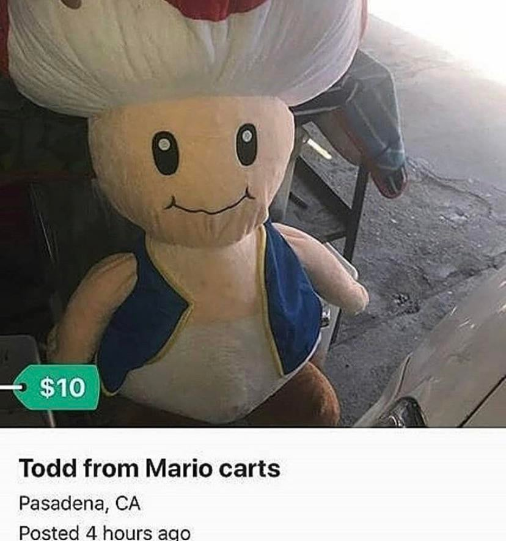
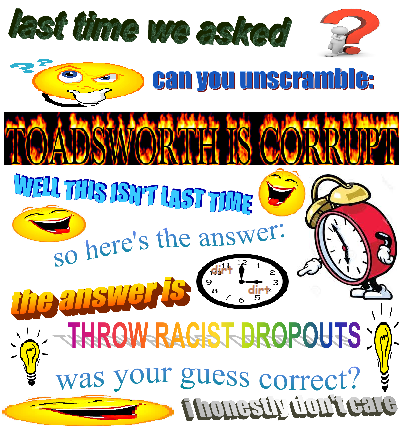

"i like adding things in that don't work in tbgs"
$5.00 | ~8 ghost dollars | ⭐25 coins
Does not include potential cost from surprise mechanics, purchases from Shef Kerbi's Apparel or preordering the Special Edition
-------------------------
DIET BATHWATER SELLS OUT:
by shef kerbi
Shef Kerbi's Apparel recently sold out the diet bathwater, due to it's insane popularity. Despite being limited to 2 per customer, people kept refreshing the page so that they could order more diet bathwater again. The Shef Kerbi Apparel team is currently trying to figure out ways to patch this exploit, so that we can keep a sustainable supply of diet bathwater. We interviewed Mr Diet Water himself about this issue:

We've had to close the purchase page for diet bathwater until our supplies are restocked.
We do have a plan to keep diet bathwater on the market without selling out really quickly, however it's not ready yet, since this new system we're introducing could maybe potentially break the universe if it doesn't operate correctly. It's expected to be operational by the first of August.
APPLE'S DESIGN CORNER
by Apple the Cat
EPISODE 1:
Many users of the popular social media site "Twitter" are concerned about the future of the site's design. However, this phenomenon of sites having terrible redesigns that attempt to reduce clutter but only make it worse is much more worrying than you may think. A 2019 study has shown that at this rate, by the year 2027, every page will be redesigned to the point where it is just a blank white page. A ton of CEOs from big internet companies showed up to some meeting so they could point fingers at each other and look important. Here is an excerpt of the meeting.
Guy in fancy suit 2: Blah blah blah.
Guy in fancy suit: Blah blah blah, blah blah, blah blah-ity blah blah.
Guy in fancy suit 2: Blah.
Guy in fancy suit 3: Blah.
SMASH SKNN DOJO! UPDATE:
by Apple the Cat
It turns out that we can't make the game, because Nintendo will kill us and also no one uses Flash anymore. Sorry about that.
BREAKIN NEWS
by Apple the Cat
Last night, the mysterious vandal of Apple the Cat's house broke into it. Apple was using all of his security cameras to record grass growing in his front yard, so unfortunately we don't have any footage of the perpetrator, but at least we know they didn't break on the porch, I guess. The thief stole all of Apple's cinnamon. Detectives believe that they then used Apple's personal time machine to take themself back to the past to play the sell it to people who want to do the cinnamon challenge.
DIMENSIONAL NEWS
by Apple the Cat
Today, paper. We will tell you more as this story unfolds.

Now I don't wanna give my own opionion but...
OPIONION WITH SHEF KERBI AND BON STARBUCKLE
lol
So we told you Shef Kerbi News Network fans on our Scratch page that you could post anything with the #SKNN hashtag and you could end up in our paper! In this episode, we'll respond to some of your feedback with the new SKNN format, as well as show some of your cool stuff!
We began this issue's section with
"Forumers: "Then I was playing Minecraft for like 23 hours, and this meenie said I had no life ZOMG D:<< Discuss" - Urban Dictionary, December 8th, 2011"
and here were your responses:
ThatOneWeirdDude wrote:
"did you get the shef kirbi bathwater idea from Belle Delphine"
"@ThatOneWeirdDude yeah you did, you used the exact same quote from belle delphine XD ( ͡° ͜ʖ ͡°)"
Who's that? Never heard of that person in my life.
niall45 wrote:
"I drank your Shef Kerbi Diet Bathwater and it tastes like Kerb pops. Remember those?"
Yes we do. Tecnically, none of our products on Shef Kerbi's Apparel are meant to be edible. However, if you want us to, we could start up a Dreem Lend supermarket chain or something like that, and introduce Kerb Pops using that. We'll discuss that with our team.
PETA wrote:
"Stop promoting Opossum Boxes, because they promote animal cruelty by allowing people to buy opossum products, including a dead opossum. Take the advertisement down or we will sue."
Go ahead. Our Opossum Dealer knows what's up.
While we were compiling all our news articles together for #26, a picture was sent to us through our social media email fax machine telegram from the one and only TSM_Liquid_FaZe_Ninja. Here is his image:

If you would like to submit your own opionion for Shef Kerbi or a question to Bon Starbuckle (or his cat), just go to our social media, on Twitter, Instagram or Scratch.
But prefably Scratch because that's what everyone uses
----------------
NEWS BREAKING JOHN GAMEMAN (why news is breki g john gameman what?????)
by John Gameman
recantleu, weard voice told john gameeman porfessonal game and man man that john gameman shod do reprort on how chef kerbe neos network siet uses bad ugly curseve foent on mobiel site insted of comic sam and soud fix???? BUT WHO WAS VOCE????? WHY TEL THIS TO JOHN GAMEMAN PROFESONEL GAME AND MANMAN I DKNT KNOW WHO COMIC SAM IS ETHER?????? hellpp??????????????
COMIX
by Apple the Cat and Keysun DDDO
Apple the Cat - Candy Sadness
Keysun DDDO - Ghost Every Clean Part 3

ACTIVITES
by Apple the Cat and Reali
TOADSWORTH IS CORRUPT? - Apple the Cat

SUDOKU - #1 answers and #2 - Reali


weather
by Zeke Teddy
Today the weather is going to be weather. Minimum of x where x is an element of the real numbers, maximum y where y is an element of the real numbers.
...oh, I can't get out of doing my job like that? (no lol) oh ok
Quite windy today, minimum of -2 overnight but it'll get up to 13
Tomorrow's going to be rainy, but it'll clear up at 3-ish, min -1 and max 15
THANK YOU FOR WATCH. PLEASE TUN E IN NEXT TIME FOR MORE NESW

Shef Kerbi News Network follows the guidelines and conventions set by the 1984 High Quality News Act of Dreem Lend, which states
that any news published is to be of a high quality, is to remain unbiased and to show all sides of a news report, does not attack anyone, and protects the privacy
of people whose identities don't want to be revealed.
If you would like to file a complaint regarding content use, please message SKNN through our Scratch account. We also have a Twitter and Instagram account if you
prefer.
Shef Kerbi News Network respects the ancestors of Cappy Town, and understands that they are the reason why Dreem Lend exists.
Shef Kerbi News Network is proud to be a subsidiary of Shef Werld
this website is best viewed with Ned's Escape